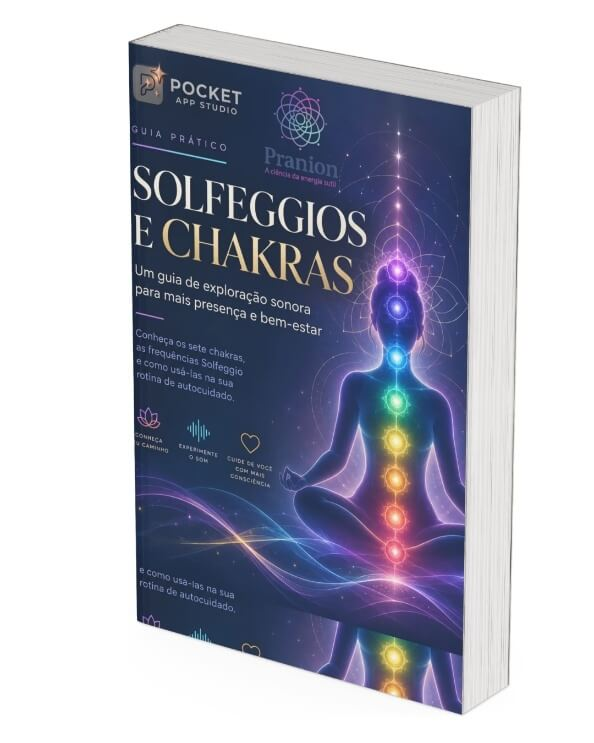
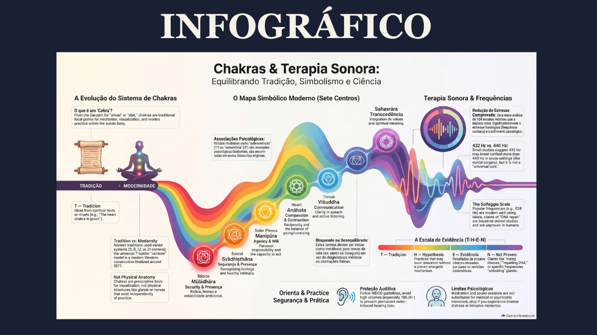

Aquilo que você sente agora pode virar um mapa.
O Raio-X dos Chakras avalia seus 7 centros de energia e mostra, direto no celular, quais aparecem alinhados e quais estão pedindo atenção. Para cada um, você recebe recursos práticos para a sua rotina.
De R$65 por R$35 ou 8x de R$5,09 · acesso vitalício
Cada chakra fala de uma área da sua vida
Em poucos minutos, veja o que cada centro representa. Não é preciso nenhum conhecimento prévio.

Raiz
Segurança e prosperidade
Sacral
Criatividade e prazer
Plexo Solar
Autoestima e poder pessoal
Coração
Amor e relacionamentos
Garganta
Comunicação e expressão
Frontal
Intuição e clareza
Coronário
Propósito e conexão
DENTRO DO APP
Responda, descubra e explore
As perguntas são embaralhadas: você responde sem saber qual chakra está sendo avaliado. No fim, recebe a devolutiva de cada centro como hipoativo, hiperativo ou alinhado.
RESPONDA
Perguntas sobre situações, sentimentos e comportamentos do seu dia a dia.
DESCUBRA
Seu nível de harmonia geral e o resultado de cada um dos 7 chakras.
EXPLORE
Abra cada chakra e veja a frequência, o cristal, a erva e o floral de Bach indicados.
COMECE
Dê o play: 15, 30 ou 60 minutos, modo binaural e som de mar ou chuva ao fundo.
UM CICLO, NÃO UM TESTE
Seu histórico fica salvo. Sua evolução fica visível.
Hoje uma área pede atenção. Daqui a algumas semanas, pode ser outra. Refaça o Raio-X quando quiser e compare: você enxerga onde já avançou e onde ainda precisa cuidar. Se você faz Reiki ou outra terapia holística, ele acompanha você entre uma sessão e outra.
JUNTO COM O APP
O app mostra o quê. Os materiais explicam o porquê.

E-book Solfeggios e Chakras
A origem dos sete chakras e das frequências Solfeggio, com perguntas de reflexão ao fim de cada capítulo.

Infográfico Chakras e Terapia Sonora
O que a ciência já confirmou, o que é hipótese e o que é tradição, em uma página para consultar e compartilhar.
7 Chakras Cards
Um card por chakra explicando onde ele atua e o que significa o seu resultado: hipo, hiper ou alinhado.

Ainda não sabe o que são Solfeggios?
São tons que a tradição associa a cada centro de energia, como 396 Hz e 528 Hz. No modo binaural, cada ouvido recebe um tom ligeiramente diferente, por isso o app recomenda o uso de fones.
Não é diagnóstico médico nem psicológico. É uma ferramenta de autoconhecimento.
Não precisa saber nada sobre chakras. O questionário conduz e os materiais explicam.
Nada para instalar. Abre no navegador; se quiser, adicione um atalho na tela inicial.
TUDO O QUE VOCÊ RECEBE
Raio-X dos Chakras
✓ Avaliação individual dos 7 chakras
✓ Frequências Solfeggio com player, binaural, mar e chuva
✓ Cristais, ervas e florais de Bach por chakra
✓ Histórico para acompanhar sua evolução
✓ 7 Chakras Cards
✓ E-book Solfeggios e Chakras
✓ Infográfico Chakras e Terapia Sonora
Você compra uma vez e usa por quanto tempo quiser. Sem mensalidade, sem renovação.
De R$65,00 por apenas
R$35
ou 8x de R$5,09
Compra segura via Kiwify · Acesso liberado após a confirmação
Você no controle da sua jornada.
Criado pela Pranion Terapias a partir do atendimento real em terapia holística. Faça sua primeira avaliação hoje e ouça sua primeira frequência em minutos.
COMEÇAR MEU RAIO-X AGORAR$35 à vista ou 8x de R$5,09 · acesso vitalício